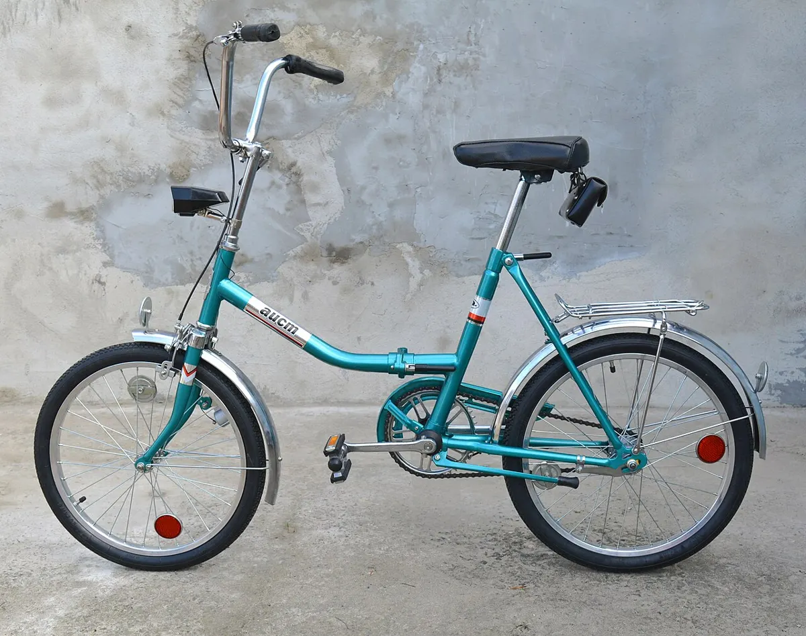
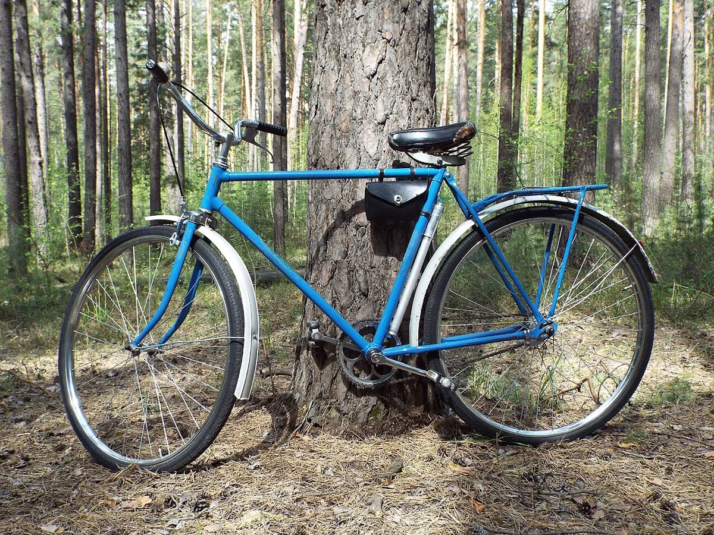

История: подробнее
Велосипеды СССР: заводы и известные модели
В СССР велосипед был массовым транспортом: на нём ездили на работу, в деревню, на дачу. Велосипеды выпускали несколько крупных заводов; многие модели знали по названиям, а в документации — по цифровым индексам.



Крупные производители и модели
| Завод | Город | Известные модели |
|---|---|---|
| Харьковский велосипедный завод (ХВЗ) | Харьков | «Украина» (дорожный), «Турист», спортивные «Старт-шоссе» |
| Минский мотовелозавод (ММВЗ) | Минск | «Аист»; также мотоциклы «Минск» |
| Пермский велосипедный завод | Пермь | «Урал» (дорожный), складной «Кама» |
Характерные черты
- Дорожные модели («Украина», «Урал») — стальная рама, ножной тормоз во втулке, одна передача, колёса 28".
- Модели обозначались цифровыми индексами: например, «Урал» 111-621, «Аист» 113-321 (подписи к фото ниже).
- Советские велосипеды славились ремонтопригодностью: многие детали можно было починить простым инструментом.
Если у вас советский велосипед
- Ножной тормоз — как устроен.
- Втулки и каретки — насыпные; обслуживание как в инструкции.
- При покупке покрышек ориентируйтесь на ETRTO, указанный на старой покрышке (таблица).